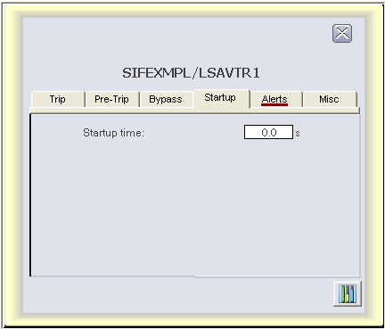

Startup tab (LSAVTR faceplate)

The following items are contained on the Startup tab of the LSAVTR function block faceplate:
Startup time - A data entry box and text label for STARTUP_TIME is visible when the startup override is configured to be time-based.
Startup timer - A value field and text label for STARTUP_TIMER is visible when the startup override is configured to be time-based and the startup override is active. The value field allows a secure write to STARTUP_TIMER when visible.
Stabilization time - A data entry box and text label for STABLE_TIME is visible when the startup override is configured to be time-based and the startup override is configured to expire on stabilization.
Time to stable (last) - A value field and text label for TIME_TO_STABLE is visible when the startup override is configured to be time-based and the startup override is configured to expire on stabilization.
Stabilization timer - A value field and text label for STABLE_TIMER is visible when the startup override is configured to be time-based, the startup override is configured to expire on stabilization, and the startup override is active.
Reminder time -A data entry box and text label for configured REMINDER_TIME is visible when the startup override is configured to be time-based and the reminder is configured to apply to startup bypasses.
The following messages may also be visible in run mode, depending upon startup override conditions:
Trip inhibited - startup active - Visible when the startup override is active
Waiting for startup reset event - Visible when the startup override is active and the startup bypass duration is configured to be event-based.